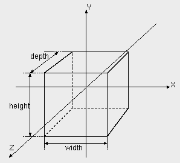

| vfr - volflex rendering API - |
class vfrCube
Class Hierarchy
Header files
- #include "vfrCube.h"
- vfrCube(const std::string& name VFR_NONAME, const Bool mode = FALSE)
- デフォルトサイズ(幅1.0,高さ1.0,奥行き1.0)のvfrCubeオブジェクトを
インスタンスする。
- name オブジェクト名
- mode 自己破壊モード
- vfrCube(const float w, const float h, const float d, const std::string& name VFR_NONAME, const Bool mode = FALSE)
- 指定された幅(w)、高さ(h)、奥行き(d)のvfrCubeオブジェクトをインスタンスする。
- w 幅
- h 高さ
- d 奥行き
- name オブジェクト名
- mode 自己破壊モード
- virtual ~vfrCube()
- vfrCubeオブジェクトを破壊する。
public methods / variables
- void setWidth(const float w)
- 幅(X軸方向の長さ)を設定する。
- w 幅(デフォルト: 1.0)
- void setHeight(const float h)
- 高さ(Y軸方向の長さ)を設定する。
- h 高さ(デフォルト: 1.0)
- void setDepth(const float d)
- 奥行き(Z軸方向の長さ)を設定する。
- d 奥行き(デフォルト: 1.0)
- float getWidth() const
- 幅を返す。
- float getHeight() const
- 高さを返す。
- float getDepth() const
- 奥行きを返す。
Description
vfrCubeクラスは、立方体を表すオブジェクトクラスである。
幅(width)、高さ(height)、奥行き(depth)が指定されたとき、
以下のような立方体をレンダリングする。

vfrCubeオブジェクトは、レンダリングモードが
RT_POINTの場合、ローカル座標系の原点位置に一点のみ
ポイントレンダリングを行う。
Feedback
vfrCubeオブジェクトはローカル座標系の原点の頂点情報しか持たない。
そのため、フィードバックテストにおいては、
フィードバックモード属性に応じ、
以下のような結果を返す。
- FB_VERTEX
- ローカル座標系の原点がフィードバックテストに合格したとき、
頂点数 1、頂点番号 0 を返す。
- FB_FACE, FB_EDGE
- フィードバックテストは常に合格数 0 を返す。